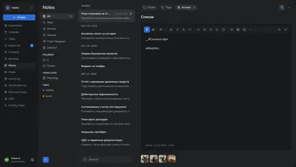

Переосмыслил UX/UI и расширил функциональность корпоративного трекера в связке с ChatGPT и Claude
Мой вклад
Discovery, UX Audit, UX/UI Design, Design System, AI Prototyping, Design QA
2026

Мой вклад
Discovery, UX Audit, UX/UI Design, Design System, AI Prototyping, Design QA
2026

Core Tracker
Полное описание проекта и принятых UX/UI-решений появится здесь после завершения работы над кейсом.
Откройте сайт на компьютере — так макеты сохраняют все детали.